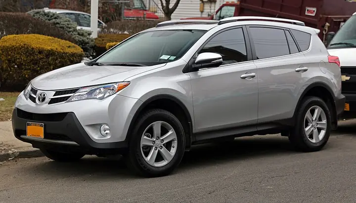
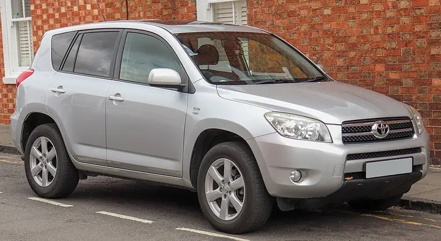
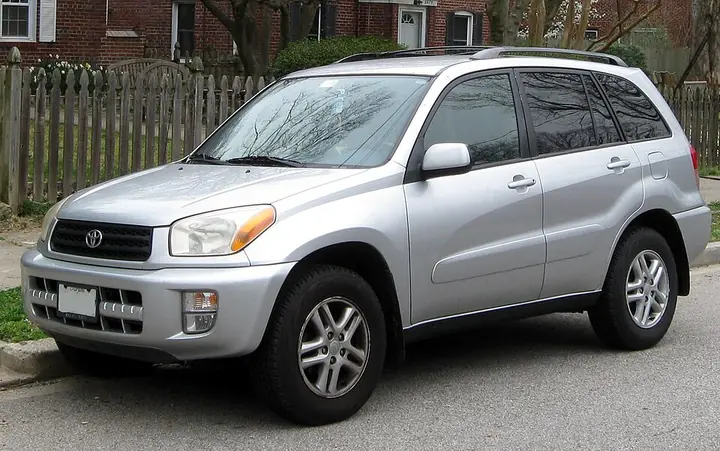
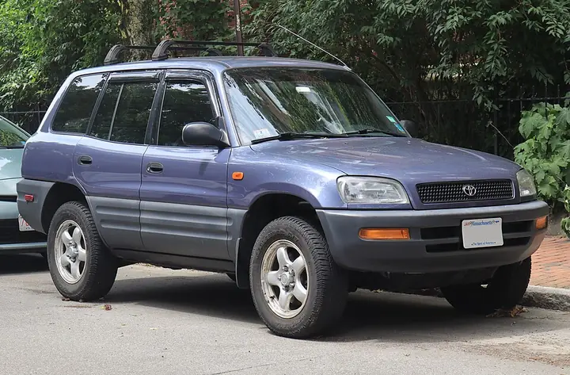

Toyota RAV4
Sixth generation (XA60; 2025) · 2025–present
Abstract
This generation of the Toyota RAV4 was built December 2025 – present in Japan: Toyota City, Aichi (Takaoka plant); Ōbu, Aichi (Toyota Industries Nagakusa plant), Canada: Woodstock, Ontario (TMMC); Cambridge, Ontario (TMMC), China: Changchun, Jilin (FAW Toyota); Guangzhou (GAC Toyota) and other plants. Body styles: 5-door SUV. Designed by Hideo Koyama (project chief designer), Daisuke Iguchi and Junya Furuta (exterior), Ryo Nakane and Naoyuki Kawamoto (interior).


1Specifications
| Production | December 2025 – present |
|---|---|
| Model years | 2026–present |
| Assembly | Japan: Toyota City, Aichi (Takaoka plant); Ōbu, Aichi (Toyota Industries Nagakusa plant)Canada: Woodstock, Ontario (TMMC); Cambridge, Ontario (TMMC)China: Changchun, Jilin (FAW Toyota); Guangzhou (GAC Toyota)United States: Georgetown, Kentucky (TMMK) |
| Designer | Hideo Koyama (project chief designer)Daisuke Iguchi and Junya Furuta (exterior)Ryo Nakane and Naoyuki Kawamoto (interior) |
| Body style | 5-door SUV |
| Platform | TNGA: GA-K |
| Engine | Petrol2.0 L M20C-FKS I4 (China, Wildlander)2.0 L M20D-FKS I4 (China)Petrol hybrid2.0 L M20F-FXS I4 (China, Wildlander)2.0 L M20G-FXS I4 (China)2.5 L A25A-FXS I4 (AXAN64)Petrol plug-in hybrid2.5 L A25A-FXS I4 (AXAP64) |
| Transmission | e-CVT |
| Battery | Petrol hybrid:1.6 kWh Li-ionPetrol plug-in hybrid:22.7 kWh Li-ion |
| Charging | 11 kW AC (PHEV)50 kW DC CCS (PHEV) |
| Wheelbase | 2690 mm |
| Length | 4600–4645 mm |
| Width | 1855–1880 mm |
| Height | 1680–1685 mm |
| Weight | 1710–1720 kg (HEV)1980–1990 kg (PHEV) |
| Also called | Toyota Wildlander (GAC Toyota, China)Suzuki Across (Europe, plug-in hybrid) |
| Related | Toyota Camry (XV80) |
2Versions
- Toyota Wildlander (China)
- Suzuki Across (Europe)
- Global trim levels
3Previous generations










4Generation by generation
Length +11% from the first to the last
XA10 19944,150 mm
XA20 20004,193 mm
XA30 20054,395 mm
XA40 20124,570 mm
XA50 20184,570 mm
XA60 20254,600 mm
Weight +49% from the first to the last
XA20 20001,150 kg
XA30 20051,470 kg
XA40 20121,550 kg
XA50 20181,530 kg
XA60 20251,710 kg